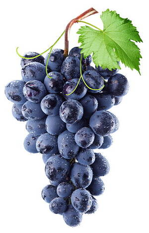

(noun male)
anatomy
bunch of fruit, flowers [βοτρυς]


complete
See also:
| view | ⲗⲟⲟⲩ, ⲗⲟⲟⲩⲉ S ⲗⲱⲟⲩ SB ⲗⲁⲁⲩ, ⲗⲁⲩ S ⲗⲁⲩ BF | (noun male) curl of hair [σειρα, βοστρυχος]
ring, link in chain fringe (tasselled ?) bunch, cluster of dates1007 |
| view | ⲁⲗⲱⲟⲩⲉ S ⲁⲗⲱⲟⲩ, ⲁⲗⲱⲟⲩⲓ B | (plural) bunch of grapes436 |
| view | ⲉⲗⲟⲟⲗⲉ S ⲉⲗⲁⲁⲗⲉ A ⲉⲗⲁⲗⲉ L ⲁⲗⲟⲗⲓ B ⲁⲗⲁⲁⲗⲓ, ⲁⲗⲁⲗⲓ, ⲉⲗⲁⲁⲗⲓ, ⲓⲗⲁⲗⲓ F ⲉⲗⲉⲗ-, ⲗⲉⲗ-, ⲗⲉⲉⲗ-, ⲗⲓⲗ- S ⲉⲗⲁⲗ- A ⲁⲗ-, ⲉⲗ-, ⲗⲉⲗⲉ- B | (noun male) grape [σταφυλη]
― single grape ― bunch of grapes ― unripe, sour grape ― fresh grape ― mellow, purple grape ― dried grapes, raisins ― raisins stoned ― grape-stone, pip ― other sorts: nightshade عنب الذئب198 |
| view | ⲕⲛⲁⲁⲩ S ⲕⲛⲟ A ⲭⲛⲁⲩ B ⲕⲛⲉⲩ F | (noun male) sheaf [δραγμα, αγκαλις]821 |
| view | ϣⲟⲗ SB ϣⲁⲗ SLF | (noun male) bundle [δεσμη]1887 |